자기비파괴검사기사 (2021-03-07 기출문제)
1과목: 비파괴검사 개론
1. 400℃ 이상의 온도에서 일정 하중조건하에서 장시간 사용 했던 재료에 발생하는 파괴로, 일반적으로 모재에 많이 발생하는 균열은?
- 열간균열
- 피로균열
- 응력부식균열
- 크리프균열
(정답률: 56%)

2. 다음 중 레이저(laser)가 필요한 비파괴검사법은?
- 입체 방사선투과검사(Stereo radiography)
- 자속누설검사(Magnetic flux leakage test)
- 스펙클 간섭법(Speckle interferometry)
- 광섬유 보아 스코프(Fiber optic borescope)
(정답률: 61%)
3. 다음 중 다른 비파괴검사방법에 비해 초음파탐상검사 방법의 장점을 설명한 것은?
- 초음파탐상검사는 방사선투과검사에 비해 균열 등 미세한 결함에 대해 감도가 높다.
- 다른 비파괴검사에 비해 빔에 평행한 방향의 결함은 쉽게 검출되지만 금속의 결정립 크기에 영향을 받기 쉽다.
- 다른 비파괴검사에 비해 검사자의 많은 지식과 경험이 요구된다.
- 다른 비파괴검사에 비해 주로 탐촉자와 시험체간의 직접 접촉에 의하여 감도가 크게 변한다.
(정답률: 83%)
4. 방사선투과시험에서 현상액의 온도가 규격에 화씨(°F)로 되어 있어 섭씨온도로 변환시켜 측정된 값과 비교하고자 한다. 다음 중 화씨온도(°F)를 섭씨온도(℃)로 변환하는 식으로 옳은 것은?
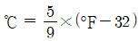
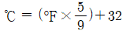
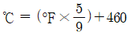
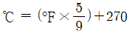
(정답률: 80%)
5. 다음 중 와전류탐상시험법으로 검사할 수 없는 재료는?
- 동관(Copper tube)
- 알루미늄 합금
- PVC 파이프
- 텅스텐 와이어
(정답률: 85%)
6. 주철에서 흑연화를 방해하는 원소는?
- Cr
- Si
- Ni
- Co
(정답률: 56%)
7. 순수한 마그네슘을 액체 상태로부터 상온까지 서서히 냉각시키면서 시간에 따른 온도변화를 측정한 그래프가 다음과 같을 때, To가 의미하는 것은?
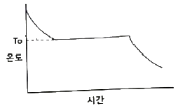
- 마그네슘의 비등점
- 마그네슘의 응고점
- 마그네슘의 액화점
- 마그네슘의 자기변태점
(정답률: 83%)
8. 강에 포함되어 적열취성의 원인이 되는 성분은?
- Cu
- S
- P
- H
(정답률: 75%)
9. 피로강도를 증가시키는 방법으로 옳은 것은?
- 표면 거칠기를 증가시킨다.
- 표면층의 강도를 감소시킨다.
- 가능한 한 노치를 많게 한다.
- 표면에 쇼트 피닝 처리를 한다.
(정답률: 79%)
10. 합금의 조직 미세한 처리 목적으로 용융금속에 금속 나트륨을 첨가한 합금계는?
- Cu – Zn 계
- Cu - Ni 계
- Al - Si 계
- Zn – Al - Cu 계
(정답률: 70%)
11. 고속도공구강인 SKH51의 주요 합금 첨가 원소로 옳은 것은?
- Co – Be – W - Cr
- N – Cr – Ni - Co
- W – Cr – Mo - V
- Co – Ni – W – Sn
(정답률: 95%)
12. 알루미늄의 일반적인 성질이 아닌 것은?
- 가공성이 좋다.
- 가볍과 내식성이 좋다.
- 순도가 높을수록 연질이 된다.
- 알루미늄 내 Cu는 전도율을 향상시킨다.
(정답률: 85%)
13. 일정한 지름의 강철 볼을 일정한 하중으로 시험편 표면에 압입한 다음, 하중을 제거한 후에 볼 자국의 표면적으로 하중을 나눈 경도값을 HBS 또는 HBW로 표기하는 경도기는?
- 브리넬 경도기
- 로크웰 경도기
- 쇼어 경도기
- 비커즈 경도기
(정답률: 65%)
14. 다음 중 Mg의 특성을 설명한 것으로 틀린 것은?
- 융점은 약 1107℃이다.
- 비강도가 커서 항공우주용 재료로 사용된다.
- 감쇠능이 주철보다 커서 소음방지 구조재로서 우수하다.
- 상온에서 100℃까지는 장시간에 노출되어도 치수의 변화가 거의 없다.
(정답률: 62%)
15. 강 중의 잔류 오스테나이트를 마텐자이트로 변태시킬 목적의 열처리는?
- 템퍼링 처리
- 마템퍼링 처리
- 서브제로 처리
- 오스템퍼링 처리
(정답률: 60%)
16. 볼트나 환봉 등을 강판이나 형강 등에 직접 용접하는 방법으로 모재와 볼트 사이에 순간적으로 아크를 발생시키는 용접방법은?
- 스터드 용접
- 테르밋 용접
- 서브머지드 아크 용접
- 가스 텅스텐 아크 용접
(정답률: 50%)
17. 강의 용착 금속 결함 중 온점(Fish eye) 발생의 가장 큰 원인이 되는 가스는?
- 질소
- 수소
- 헬륨
- 이산화탄소
(정답률: 78%)
18. 피복 아크 용접에서 아크전압이 20V, 아크전류는 150A, 용접속도가 15cm/min 일 때 용접 입열은 몇 Joule/cm인가?
- 120
- 750
- 12000
- 75000
(정답률: 82%)
19. 다음 중 피복제의 역할로 틀린 것은?
- 아크를 안정시킨다.
- 용착금속을 보호한다.
- 용착 금속의 냉각속도를 빠르게 한다.
- 용착금속에 필요한 합금원소를 첨가시킨다.
(정답률: 90%)
20. 용접 중에 아크를 중단시키면 중단된 부분이 오목하거나 납작하게 파진 모습으로 남는 것은?
- 기공
- 앤드 탭
- 선상조직
- 크레이터
(정답률: 60%)
2과목: 자기탐상검사 원리
21. 자속밀도 B의 자계 중에 직각으로 길이 L[m]의 도선을 놓고 이것에 I[A]의 전류를 흘를 때 받는 힘 F[N]은?
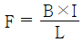
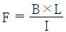
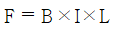
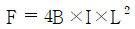
(정답률: 59%)
22. 자화방법을 선정할 경우 주의해야 할 사항으로 틀린 것은?
- 탐상면에 손상을주지 않는 자화방법은 선정한다.
- 가능한 한 반자계가 생기지 않는 자화방벙을 선정한다.
- 자속의 방향이 탐상면에 가능한 한 직각이 되는 자화방법을 선정한다.
- 복잡한 형상의 시험체는 탐상면을 분할하여 국부적으로 자화하는 방법을 선정한다.
(정답률: 74%)
23. 다음 전처리 방법 중 잘못된 것은?
- 최종 검사이므로 모든 부품을 조립한다.
- 시험면을 깨끗이 한다.
- 강하게 자화된 제품은 탈자한다.
- 검사 대상이 아닌 볼트구멍은 테이프 등으로 막는다.
(정답률: 92%)
24. 자분탐상시험에 필요한 자분의 성질을 바르게 설명한 것은?
- 작은 결함의 검출을 위해 착색제나 형광재의 두껍고 흡착력이 낮아야 한다.
- 누설자속에 의해 생긴 자극에 대하여 흡착성능이 뛰어나고, 형성된 자분모양의 식별성능이 좋아야 한다.
- 시험면이 여러 가지 색을 띠고 있는 경우 형광자분보다는 비형광 자분을 선택하는 것이 대비가 잘된다.
- 일반적으로 누설자속밀도가 낮은 경우 비형광자분을 선택하는 것이 형광자분을 선택하는 것보다 유리하다.
(정답률: 85%)
25. 도체에 직접 통전할 경우 도체에서 자장이 어떻게 형성 되는가?
- 도체에 평행한 직선 형태
- 도체에 수직인 직선 형태
- 도체의 동심원 형태
- 도체표면의 법선 형태
(정답률: 64%)
26. 연속법과 비교하였을 때 잔류법을 이용한 자분탐상검사로 탐상이 가장 힘든 제품은?
- 공구강
- 스프링강
- 연철
- 탄소 함유량이 높은 강
(정답률: 83%)
27. 자분탐상시험 시 결함 검출이 양호한 경우는?
- 시험체에 누설자장의 형성이 없을 때
- 자장의 방향과 누설자장의 방향이 직교될 때
- 균열결함의 길이 방향이 자장의 방향과 평행할 때
- 자화전류 값이 부족하여도 금속조직이 양호할 때
(정답률: 60%)
28. 자분탐상검사 시 시험기록에 기재하지 않아도 될 사항은?
- 시험장소
- 시험일자
- 시험 시 온도
- 자분적용에 대한 자화의 시기
(정답률: 78%)
29. 재질의 보자성(retentivity)을 바르게 설명한 것은?
- 자화되기 쉬운 정도
- 탈자하는데 걸리는 시간
- 부품내 자장의 깊이
- 자장을 유지하는 능력
(정답률: 84%)
30. 자분재료를 선정하기 위하여 재료의 투자율과 자기이력곡선을 조사하는 경우 다음 중 자분재료로 가장 적합한 것은?
- 높은 초기투자율을 가지며, 폭이 좁은 자기이력곡선을 갖는 재료
- 낮은 초기투자율을 가지며, 폭이 좁은 자기이력곡선을 갖는 재료
- 높은 초기투자율을 가지며, 폭이 넓은 자기이력곡선을 갖는 재료
- 낮은 초기투자율을 가지며, 폭이 넓은 자기이력곡선을 갖는 재료
(정답률: 64%)
31. 같은 크기의 봉형 자성체와 비자성체에 같은 양의 직류전류를 흘릴 때 자계에 관한 사항으로 틀린 것은?
- 봉재 내부 중심에서 자계의 세기는 자성체와 비자성체 모두 “0” 이다.
- 봉재 표면에서 자계의 세기는 자성체가 비자성체보다 크다.
- 봉재 표면으로부터 떨어진 외부에서 자계의 세기는 자성체가 비자성체보다 크다.
- 비자성체의 경우 봉재표면으로부터 봉재 반지름 거리만큼 떨어진 외부의 자계세기는 표면 자계세보다 작다.
(정답률: 25%)
32. 철강 재료의 자기 변태온도는 약 얼마인가?
- 217℃
- 512℃
- 768℃
- 1600℃
(정답률: 96%)
33. 대형 시험체의 표면을 극간법으로 검사할 때의 장점이 아닌 것은?
- 전기적 직접 접촉이 없어도 가능하다.
- 소형이며 휴대가 간편하다.
- 임의의 불연속을 검출할 수 있다.
- 상자성체의 재료에 효과가 좋다.
(정답률: 67%)
34. 다음 재료 중 부도체에 해당하는 것은?
- 고무
- 금
- 은
- 구리
(정답률: 95%)
35. 솔레노이드 내부에서의 자계의 세기 H는? (단, 전류의 세기를 I, 솔레노이드 1m 당 감은 수를 n이라 한다.)
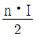
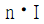
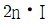
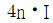
(정답률: 69%)
36. 적절한 자화방법과 정확한 탐상결과를 얻기 위해 고려해야 할 내용으로 가장 거리가 먼 것은?
- 시험체의 성질을 고려한다.
- 자속의 방향이 시험면에 가능한 한 평행이 되게 한다.
- 반자계가 생기지 않게 한다.
- 검출하고자 하는 결함에 가능한 한 경사각으로 자속이 흐르게 한다.
(정답률: 75%)
37. 일정 전류가 흐르는 도체에 전류의 양은 변화시키지 않고 직경을 2배로 하였을 때 도체 표면 자계의 세기 변화는?
- 동일하다.
- 1/2로 줄어든다.
- 1/4로 줄어든다.
- 2배로 늘어난다.
(정답률: 78%)
38. 코일법에서 가해진 자계로부터 반자계를 뺀 자계를 나타내는 것은?
- 보자자계
- 누설자계
- 유효자계
- 자속자계
(정답률: 90%)
39. 자속을 ø, 기자력을 F, 자기저항을 R 이라 했을 때 이들 사이의 관계식은?
- F = R / ø
- ø = F/ R
- F = ø / R2
- ø = R ⦁ F2
(정답률: 70%)
40. 프로드를 이용한 자기탐상시험에서 프로드 접촉부 아래에 있는 결함은 어떻게 검출하는가?
- 여러 부분으로 나누고 각 부분을 겹쳐서 시험한다.
- 전류값을 낮추어 시험한다.
- 자화력을 증가시킨다.
- 자속밀도를 증가시킨다.
(정답률: 73%)
3과목: 자기탐상검사 시험
41. 설치형 자분탐상장치의 점검 시 교류자화전류계의 자화전류는 파고치로 나타나고 표준 교류전류계의 지시치는 실효치로 나타난다. 이 실효치는 비례 계산에 의해 산출한 값을 몇 배하여 파고치로 고쳐서 비교하는가?
- √2배
- 2배
- 4배
- 8배
(정답률: 62%)
42. 자분탐상검사에 교류 전류를 사용하는 경우의 설명으로 옳은 것은?
- 탈자시킬 때는 사용하지 않는다.
- 자속의 침투깊이가 매우 깊다.
- 일반적으로 잔류법에는 적용하지 않는다.
- 표면 불연속의 검출에 비효율적이다.
(정답률: 80%)
43. 저탄소강(0.04%) 재료의 검사 대상체를 탐상할 때 표면 아래에 존재하는 불연속을 검출하기 위하여 습식자분을 사용하는 경우 더 깊은 곳까지 검출할 수 있는 방법은?
- 충격전류 사용
- 직류전류 사용
- 잔류전류 사용
- 교류전류 사용
(정답률: 78%)
44. 다음 중 자화고무법(Magnetic Rubber Inspection)의 특성이 아닌 것은?
- 코일법 및 프로드법으로도 적용할 수 있다.
- 관찰할 때 직접 접근이 어려운 부위에도 검사가 가능하다.
- 검사시간이 많이 소요되나 검사결과를 다시 확인할 수 있다.
- 시험면이 코팅된 경우에는 검사가 불가능하다.
(정답률: 65%)
45. 축통전법으로 직경 50mm, 길이 60cm인 환봉을 검사하려할 때 일반적으로 요구되는 시험 전류값으로 적당한 것은?
- 300A
- 1000A
- 1700A
- 2400A
(정답률: 45%)
46. 자분탐상검사 시 시험체 전면에 자분모양이 나타났을 때의 1차적인 조치로 가장 적절한 것은?
- 시험체를 폐기한다.
- 반대 방향으로 재검사한다.
- 전류량을 낮춰서 재검사한다.
- 전류량을 높여서 재검사한다.
(정답률: 83%)
47. 다음 중 자분탐상검사로 대형 주조물의 결함을 검출할 수 있는 가장 효율적인 방법은?
- 자계가 불연속에 대해 평행하도록 전류를 통한다.
- 주조물의 한쪽 끝에서 중심까지 전류를 보낸다.
- 1회에 6인치 간격으로 프로드를 접촉시키고 전류를 통한다.
- 강한 자계가 검사를 방해하지 않도록 투자율을 0(zero)에 가깝게 낮춘다.
(정답률: 73%)
48. 길이 20cm, 외경 10cm 인 파이프(pipe)형태의 철강제품을 코일법으로 자분탐상검사할 때 코일의 권선수를 5회로 할 경우 필요한 자화전류는?
- 300A
- 450A
- 3000A
- 4500A
(정답률: 64%)
49. 직류로 자분탐상검사하여 어떤 지시를 얻었다. 이 지시가 표면에서 아주 가까이 있는 결함에 의한 것인지 또는 표면으로부터 깊숙이 있는 결함에 의한 것인지를 알아 보기 위한 방법으로 가장 적당한 것은?
- 자분무늬를 잘 관찰한 뒤 닦아내고 표면을 관찰한다.
- 탈자한 뒤 교류로서 다시 검사해 본다.
- 탈자한 뒤 다시 자분을 적용하여 본다.
- 탈자한 뒤 충격전류로서 다시 검사해 본다.
(정답률: 91%)
50. 한봉형 시험체를 축통전법으로 검사할 때 동일 크기의 자화전류로 직경이 2배인 시험체를 검사한다면 시험면에서의 자계의 세기는?
- 1/2 이 된다.
- 2배가 된다.
- 4배가 된다.
- 8배가 된다.
(정답률: 87%)
51. 자분탐상검사에 의해 검출이 거의 불가능한 결함은?
- 압연 신장에 의해 꺾인 봉강의 종균열
- 후판 용접 중심부의 내부 용입불량
- 냉간 압연에 의해 제조된 박판의 균열
- 열간 압연에 의해 제조된 후판의 단면 비금속개재물
(정답률: 79%)
52. 축통전법에 의한 자화기기 접촉부에 납판이나 구리선망과 같은 전극의 접촉부를 갖는 주된 이유는?
- 접촉면에 밀착시키기 쉽고 전도성이 좋으므로
- 금속에 열을 가하여 자계를 유도하기 위하여
- 접촉면과 떨어지므로 신뢰성을 높이기 위하여
- 낮은 용융점을 가져 시험체의 손상을 방지하므로
(정답률: 79%)
53. 프로드법에 의한 자분탐상시험 시 적용되는 최대 포드의 간격은 얼마인가?
- 2 ~ 3인치
- 6 ~ 8인치
- 10 ~ 12인치
- 15 ~ 18인치
(정답률: 86%)
54. 자분탐상시험에서 표면에 존재하는 미세한 결함을 가장 효율적으로 검출하기 위해서는 어떤 자화전류와 자분을 선택하여야 하는가?
- 반파직류 - 건식
- 교류 - 습식
- 반파직류 - 습식
- 교류 – 건식
(정답률: 85%)
55. 자분검사액에 사용되는 분산매에 요구되는 성질이 아닌 것은?
- 적심성이 좋을 것
- 휘발성이 높을 것
- 인화점이 높을 것
- 변질이 없을 것
(정답률: 79%)
56. 코일로 선형자화를 할 때 암페어의 실효치를 정하는 방법은?
- Amopere-Turns(A-T)
- 코일의 감은 수를 시험품의 폭으로 곱
- 암페어 Meter가 가리키는 암페어 수
- 전류(I) = 전압(E) / 저항(R) 로서 [A]
(정답률: 84%)
57. 자분의 자기적 성질을 바르게 나타낸 것은?
- 투자율이 높고 보자력이 클 것
- 투자율이 낮고 보자력이 클 것
- 투자율이 높고 보자력이 작을 것
- 투자율이 낮고 보자력이 작을 것
(정답률: 67%)
58. 자분탐상검사로 피로균열(Fatigue Crack)을 검출하는데 가장 효과적인 자화전류는?
- 교류
- 직류
- 단상반파정류
- 삼상전파정류
(정답률: 53%)
59. 다음의 자분탐상검사법 중 누설자속탐상법에 해당되지 않은 것은?
- 반도체자기센서법
- 탐사 코일법
- 전자유도시험법
- 자기 테이프법(녹자 탐상법)
(정답률: 39%)
60. 판재에서 연화처리 없이 압연방법으로 두께를 감소시킬 때 주로 표면에 평행 방향으로 나타나는 결함은?
- 균열
- 핫티어
- 기공
- 라미네이션
(정답률: 90%)
4과목: 자기탐상검사 규격
61. 강자성 재료의 자분탐상검사 방법 및 자분모양의 분류(KS D 0213)에 규정한 의사모양에 해당되지 않는 것은?
- 오염지시
- 자극지시
- 자기펜자국
- 표면거칠기지시
(정답률: 87%)
62. 강자성 재료의 자분탐상검사 방법 및 자분모양의 분류(KS D 0213)에서 검사기록의 작성으로 자석형 장치를 사용할 때 기입해야 하는 것은?
- 자극값
- 전류 최대치
- 전압 최대치
- 최대자속
(정답률: 50%)
63. 보일러 및 압력용기에 대한 자분탐상검사(ASME Sec.V Art.7)에 따라 자화강도의 적절성을 알아보기 위해 시험편 두께 0.⑤mm의 인공결함 심(Artificial Flaw Shim)을 제작하고 할 때 적절한 인공결함의 깊이(mm)는?
- 0.0⑤
- 0.015
- 0.025
- 0.040
(정답률: 60%)
64. 보일러 및 압력용기에 대한 자분탐상검사(ASME Sec.V Art.7)에 따른 자분탐상시험에서 프로드를 사용하여 자화할 때 사용 가능한 프로드 사이의 간격은?
- 25mm
- 50mm
- 60mm
- 100mm
(정답률: 53%)
65. 강자성 재료의 자분탐상검사 방법 및 자분모양의 분류(KS D 0213)에서 시험결과 확인된 자분모양이 흠에 의한 것으로 판정하기 어려울 때는 일반적으로 어떻게 하는가?
- 결함으로 판정한다.
- 현미경이나 확대경으로 관찰하여 확인 판정한다.
- 탈자를 하고 표면상태를 개선하여 재시험한다.
- 강자성체를 시험면에 접촉시켜 자기흔적 여부를 확인한다.
(정답률: 83%)
66. 보일러 및 압력용기에 대한 자분탐상검사(ASME Sec.V Art.7)에서 극간법을 사용하여 용접부를 검사할 때 직류를 사용하면 사용 극간 최대 간격에서 들어 올릴 수 있는 힘(lifting power)은 얼마 이상인가?
- 25N
- 125N
- 225N
- 325N
(정답률: 67%)
67. 강자성 재료의 자분탐상검사 방법 및 자분모양의 분류(KS D 0213)에 따른 자화전류의 한 종류로써, 사이클로트론, 사일리스트 등을 사용하여 얻은 1펄스의 자화전류는 무엇인가?
- 교류
- 전파정류
- 삼상전파정류
- 충격전류
(정답률: 50%)
68. 강자성 재료의 자분탐상검사 방법 및 자분모양의 분류(KS D 0213)에 따른 탐상시험 보고서에 다음과 같은 기호로 기재되어 있을 때 이 기호가 의미하는 것은?
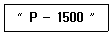
- 코일법을 사용하여 교류 1500A 흐르게 함
- 극간법을 사용하여 교류 1500A 흐르게 함
- 전류관통법을 사용하여 직류 1500A 흐르게 함
- 프로드법을 사용하여 직류 1500A 흐르게 함
(정답률: 92%)
69. 보일러 및 압력용기에 대한 자분탐상검사(ASME Sec.V Art.7)에서 합격기준에 관한 사항 중 맞는 것은?
- 모든 선형 지시는 불합격이다.
- 모든 원형 지시는 불합격이다.
- 일정 면적에 10개 이상의 관련 지시는 불합격이다.
- ASME Sec.7 Art.7에서는 기법만 기술하며 합격기준은 시험체에 해당하는 적용규격에 기술된다.
(정답률: 83%)
70. 보일러 및 압력용기에 대한 자분탐상검사(ASME Sec.V Art.7)에서 직경 3인치 봉을 원형자화로 자화 시킬 경우 직류로 표면결함을 검출하고자 한다. 결함검출 시 적정한 전류[A]로 옳은 것은?
- 100~330
- 300~500
- 500~700
- 900~2400
(정답률: 50%)
71. 보일러 및 압력용기에 대한 자분탐상검사(ASME Sec.V Art.7)에서 코일법(고충전률 코일)에 의한 선형자화 Ampere-turn 수는? (단, 피검사체 : 길이 = 457mm, 직경 = 114mm 이다.)
- 5830
- 11250
- 4630
- 8094
(정답률: 32%)
72. 보일러 및 압력용기에 대한 표준자분탐상검사(ASME Sec. V Art. 25 SE-709)에 의한 탐상결과 나타난 관련지 자분모양을 합·부 판정을 할 때 판정 기준으로 옳은 것은?
- 검사자의 판정기준에 따른다.
- 불연속부로 판정된 것은 모두 합격 처리한다.
- 불연속부로 판정된 것은 모두 불합격 처리한다.
- 제조자 및 구매자 사이에 합의된 판정기준에 따른다.
(정답률: 90%)
73. 강자성 재료의 자분탐상검사 방법 및 자분모양의 분류(KS D 0213)에서는 결함자분모양의 관찰 시 극간법에서 자극의 접촉부 및 그 주변부에 국부적으로 생기는 고밀도의 누설자속에 의해 형성되는 자분모양을 무엇이라 하는가?
- 자극지시
- 전류지시
- 전극지시
- 자기펜 자국
(정답률: 69%)
74. 강자성 재료의 자분탐상검사 방법 및 자분모양의 분류(KS D 0213)에서 규정한 자분모양의 분류에 해당되지 않는 것은?
- 균열에 의한 자분모양
- 원형상의 자분모양
- 분산한 자분모양
- 불연속한 자분모양
(정답률: 84%)
75. 강자성 재료의 자분탐상검사 방법 및 자분모양의 분류(KS D 0213)의 A형 표준시험편에 대한 설명으로 옳은 것은?
- 명칭 'A1-7/50'에서 7은 7개의 인공 흠을 의미한다.
- 명칭 'A1-15/50'에서 50은 시험편의 두께이고 단위는 mm 이다.
- A2형 표준시험편의 인공 흠은 원형과 직선형이 있다.
- A2형 표준시험편의 인공 흠은 직선형만 있다.
(정답률: 58%)
76. 강자성 재료의 자분탐상검사 방법 및 자분모양의 분류(KS D 0213)에 따라 A형 표준시험편을 시방서상에 “(A2-7/50)×2”(직선형)로 표기하였다면 다음 설명 중 옳은 것은?
- 표준시험편의 인공 흠 모양은 원형이다.
- 표준시험편의 판의 두께는 5μm 이다.
- A2형은 직선형이며 A2-7/50으로 자분모양을 얻을 수 있는 자화전류치의 2배의 자화전류치로 검사하는 것을 나타낸다.
- 인공 흠의 깊이의 공차는 7μm 일 때 ±4μm로 한다.
(정답률: 69%)
77. 강자성 재료의 자분탐상검사 방법 및 자분모양의 분류(KS D 0213)에서 표준시험편에 관한 내용 중 틀린 것은?
- A형 표준시험편의 자분 적용은 연속법으로 한다.
- C형 표준시험편의 자분 적용은 연속법으로 한다.
- B형 대비시험편은 장치, 자분의 성능평가에 이용된다.
- C형 표준시험편은 B형 대비시험편의 적용이 곤란한 경우 사용된다.
(정답률: 67%)
78. 보일러 및 압력용기에 대한 자분탐상검사(ASME Sec.V Art.7)에 따라 그림과 같이 지름 2인치, 길이 10인치인 파이프를 코일법으로 자분탐상검사를 하고자 한다. 이 때 사용될 전류는 몇 [A] 인가?
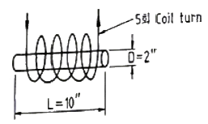
- 500 [A]
- 1000 [A]
- 1500 [A]
- 8000 [A]
(정답률: 73%)
79. 강자성 재료의 자분탐상검사 방법 및 자분모양의 분류(KS D 0213)에서 분탐상시험으로 검출할 수 없는 것은?
- 표면 균열
- 표면 기공
- 표면에서 0.1mm 깊이에 있는 균열
- 표면에서 10mm 깊이에 있는 균열
(정답률: 79%)
80. 강자성 재료의 자분탐상검사 방법 및 자분모양의 분류(KS D 0213)에 따라 탐상 결과 나타난 자분모양이 흠에 의한 것인지 의사모양인지 확인하는 방법으로 틀린 것은?
- 전류지시는 전류를 높여서 연속법으로 재시험한다.
- 표면거칠기 지시는 시험면을 매끈하게 한 후 재시험한다.
- 매크로 시험, 현미경 시험 등 자분 탐상 이외의 시험을 사용한다.
- 자기펜 자국은 탈자 후 재시험한다.
(정답률: 61%)